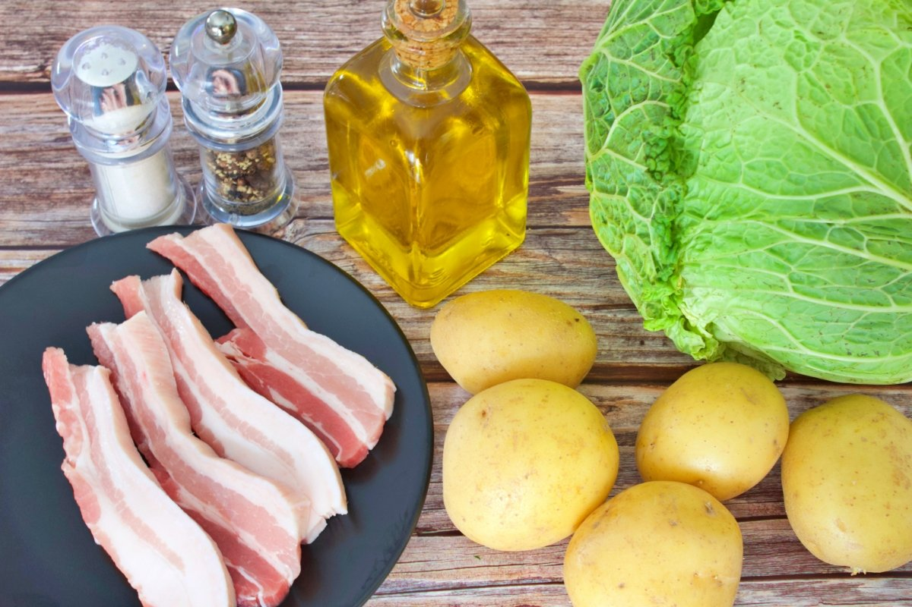
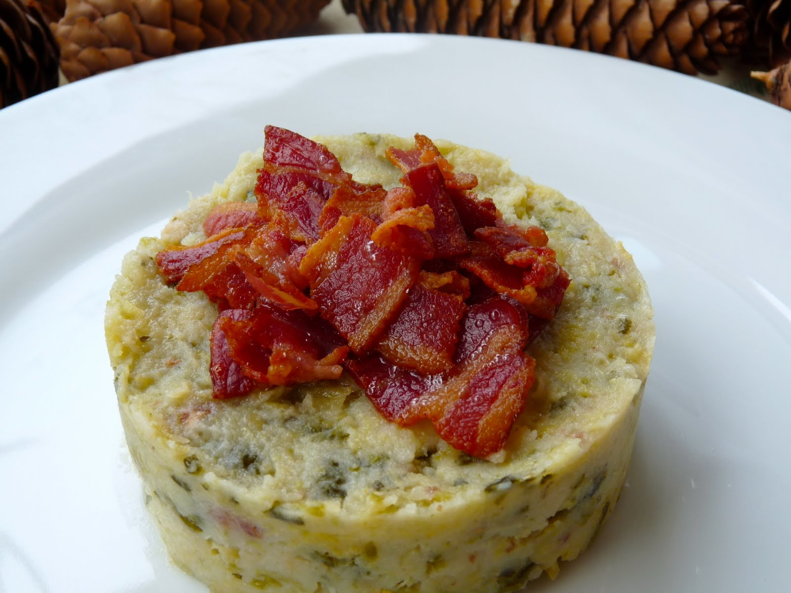
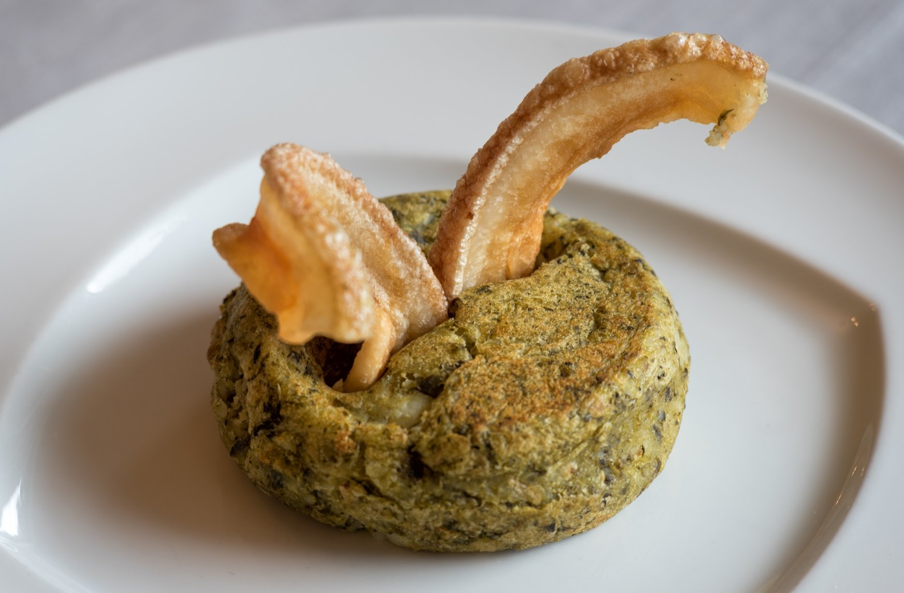
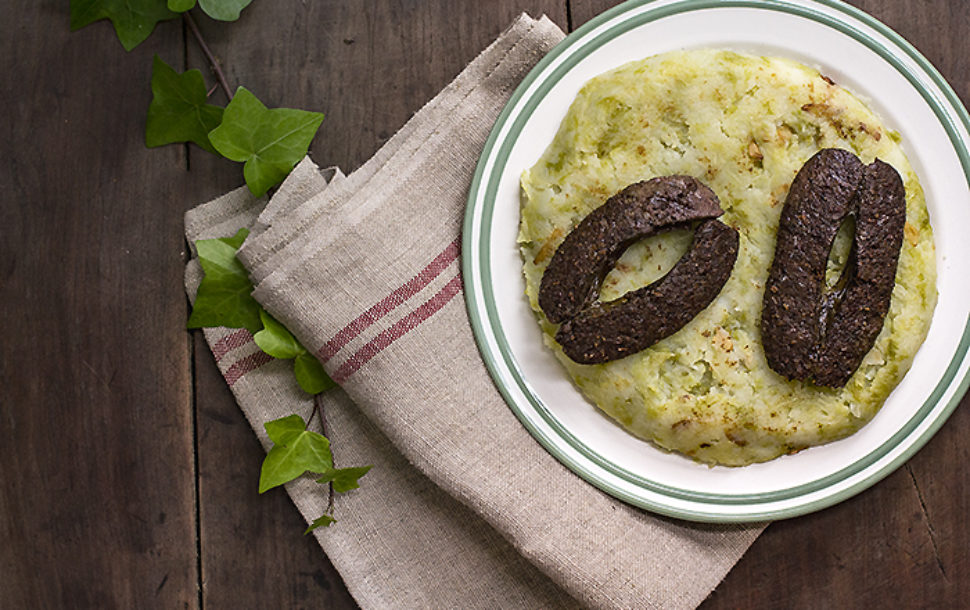

Trinxat de la cerdanya
Ingredients (per 4 racions):
- 1/2 col d'hivern (preferible)
- 2 patates de mida mitjana
- 2-3 rodanxes de botifarra negre per persona
- 4 talls de cansalada
- 2-3 grans d'all
- 1 bitxo si t'agrada el picant
- 1 got de vi ranci
- Sal i pebre al gust

Passos a seguir:
- Netegem les fulles de la col a consciència, assegurant-nos que no queda rastre de terra. Pelem les patates i les rentem.
- Posem a bullir la col trossejada amb una mica de sal. Després de 30 minuts, afegim les patates tallades a daus. Deixem tot bullint durant 30 minuts addicionals perquè quedi tot ben tovet i així costi menys de trinxar.
- Mentrestant, posem en una paella a foc lent la cansalada talladeta i salpebrada. La gràcia del foc lent és que li permet al bacon anar deixant tot el llard.
- Retirem la cansalada quan està torrada. En la mateixa paella, aprofitem el llard per daurar-hi els alls laminats: recorda retirar-los abans no es cremin!
- Tornem a col·locar la cansalada a la paella i flamegem amb el got de vi ranci. Retirem.
- Colem la col i les patates i les trinxem o piquem amb l’ajuda d’unes varetes.
- En el mateix suc d’haver fet els alls i la cansalada, fregim el bitxo i afegim la verdura. Rectifiquem de sal i pebre.
- Remenem la verdura a foc mig fins que s’evapori tota l’aigua i quedi seca. Al mateix temps, li donem forma d’una truita de patates amb l’ajuda d’una cullera de fusta i procurem que la pasta quedi homogènia. Quan el trinxat tradicional de col i patates tingui un color marró, ja ho tenim!
- Tallem la botifarra negra i la marquem una mica en la mateixa paella. Opcionalment, si t’encanta aquesta botifarra, pots tallar uns trossos addicionals, llevar-los la pell, aixafar-los a la paella per finalment barrejar-los amb la pasta de la verdura.
Possibles presentacions:




